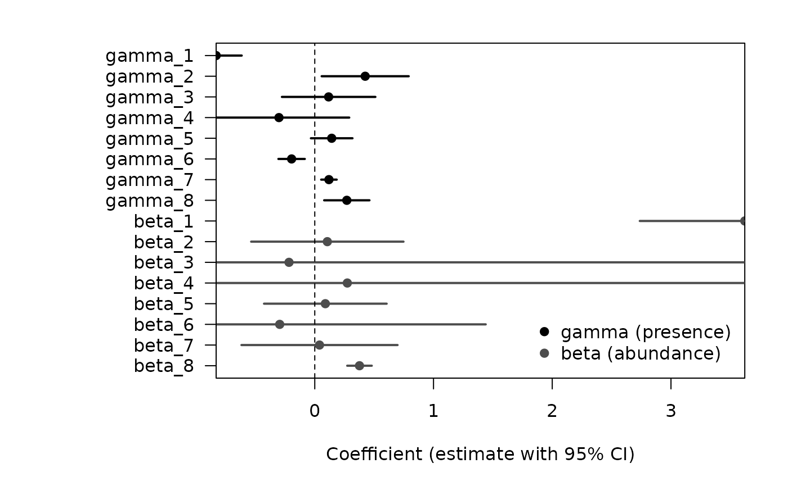

The colvR package provides tools for
the analysis of multivariate count data that exhibit both
overdispersion and zero-inflation, two
common features in ecological and environmental datasets.
In particular, the package makes it possible to impute missing
data, to estimate Poisson log-normal models
enriched with a latent PCA component, and to optimize
model parameters through efficient numerical routines.
library(colvR)
#>
#> Attaching package: 'colvR'
#> The following object is masked from 'package:stats':
#>
#> BICGeneral model
We consider a dataset of counts collected at
sites across
years.
Let
denote the number of individuals recorded at site
and year
.
Each observation is associated with a covariate vector
.
The full covariate matrix typically combines three types of information:
-
Site-level covariates
():
descriptors constant across years (e.g. habitat type, geographic
attributes).
-
Year-level covariates
():
descriptors varying across years but shared across sites (e.g. climate
indices, survey effort).
- Site–year covariates (): descriptors specific to each site–year combination (e.g. water level, vegetation cover, observer identity).
These blocks are concatenated into: so that each observation is described by a covariate vector .
The Zero-Inflated Poisson Log-Normal with Probabilistic PCA (ZI-PLN-PCA) model generates abundances in two steps:
Presence/absence process where deterministically yields .
The parameter vector encodes how covariates affect the probability of presence.Abundance process conditional on presence where controls the covariate effects on abundance, and is a latent Gaussian effect.
Each site is associated with a -dimensional latent vector so that the covariance structure of the latent effects is
This low-rank formulation parallels probabilistic PCA and parsimoniously captures correlations between years within the same site.
Example
Data
To illustrate the use of colvR, we rely on the dataset
fuligule_milouin provided with the
package.
This dataset contains winter count data of the Common Pochard
(Aythya ferina), a Palearctic diving duck
species.
The counts were collected across multiple wetland sites in North Africa
over several years, and the dataset is
characterized by a high proportion of zeros and a substantial amount of
missing values — making it a suitable
case study for the zero-inflated Poisson log-normal framework
implemented in colvR.
data("fuligule_milouin")
Y <- fuligule_milouin$Y ; X <- fuligule_milouin$X
n <- nrow(Y) ; p <- ncol(Y) ; d <- ncol(X)
cat(mean(is.na(Y)), "is the proportion of missing entries in Y.\n")
#> 0.4443353 is the proportion of missing entries in Y.
cat(mean(Y == 0, na.rm = TRUE), "is the proportion of 0's in Y.\n")
#> 0.6705407 is the proportion of 0's in Y.Choosing the size of the latent space
An important step in model specification is the choice of the
dimension
of the latent space.
The function select_model_bic() can be used to compare
models fitted with different values of
,
based on the Bayesian Information Criterion (BIC). The selected value
corresponds to the latent space
dimension that maximizes the BIC score.
bics <- select_model_bic(Y, X, Miss.ZIPLNPCA, c(1:p))
plot(bics, type = "b")
q <- which.max(bics)Fit
Once the latent dimension
has been chosen, we can fit the model using
the function Miss.ZIPLNPCA(). This function estimates the
model parameters
while simultaneously imputing the missing entries in the count matrix
Y.
fit <- Miss.ZIPLNPCA(Y, X, q)The returned object is a list containing:
- the estimated parameters of the model
(
beta,gamma,C, …),
- the variational parameters used for
inference,
- and the imputed count matrix, where missing values
in
Yare replaced by their predictions.
This fitted object can then be explored to inspect estimated
parameters, check convergence,
and evaluate the quality of imputations.
Confidence interval
Beyond point estimates, colvR also provides tools to
quantify uncertainty in the parameters.
The function V_theta() computes an estimate of the
covariance matrix of the parameters,
based on the sandwich estimator. Using this, we can derive approximate
confidence intervals
for the regression coefficients of both the presence (γ)
and the abundance (β) models.
cov <- V_theta(Y, X, fit)
theta <- c(fit$mStep$gamma, fit$mStep$beta)
var <- diag(cov)[1:(2*d)]
Intervals <- IC(theta, var)We now display the point estimates and 95% confidence intervals for the regression coefficients of the presence model () and the abundance model ().
# Build a compact table of estimates and 95% CIs (no dependency on IC())
se <- sqrt(var)
par_names <- c(paste0("gamma_", seq_len(d)), paste0("beta_", seq_len(d)))
ci_tab <- data.frame(
param = par_names,
estimate = theta,
lo = theta - 1.96 * se,
hi = theta + 1.96 * se,
group = rep(c("gamma (presence)", "beta (abundance)"), each = d),
stringsAsFactors = FALSE
)
# Order for plotting: gamma first, then beta, top-to-bottom
ci_tab$param_pretty <- factor(ci_tab$param, levels = rev(ci_tab$param))
op <- par(mar = c(5, 10, 2, 2))
plot(
x = ci_tab$estimate, y = as.numeric(ci_tab$param_pretty),
xlab = "Coefficient (estimate with 95% CI)", ylab = "",
yaxt = "n", pch = 19, xaxs = "i", col = ifelse(ci_tab$group == "gamma (presence)", "black", "gray30")
)
segments(ci_tab$lo, as.numeric(ci_tab$param_pretty),
ci_tab$hi, as.numeric(ci_tab$param_pretty),
lwd = 2, col = ifelse(ci_tab$group == "gamma (presence)", "black", "gray30"))
abline(v = 0, lty = 2)
axis(2, at = seq_along(levels(ci_tab$param_pretty)), labels = levels(ci_tab$param_pretty), las = 1)
legend("bottomright", inset = 0.01, bty = "n",
legend = c("gamma (presence)", "beta (abundance)"),
pch = 19, col = c("black", "gray30"))
par(op)